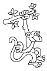

117
J'approche des bruits. Il s'agit d'une troupe de singes qui se balancent aux branches d'un arbre au milieu d'une clairière. Mais l'un d'eux a quelque chose de brillant à la main! On dirait qu'il s'agit d'un médaillon. Je dois récupérer ce médaillon! Comment vais-je faire?
|